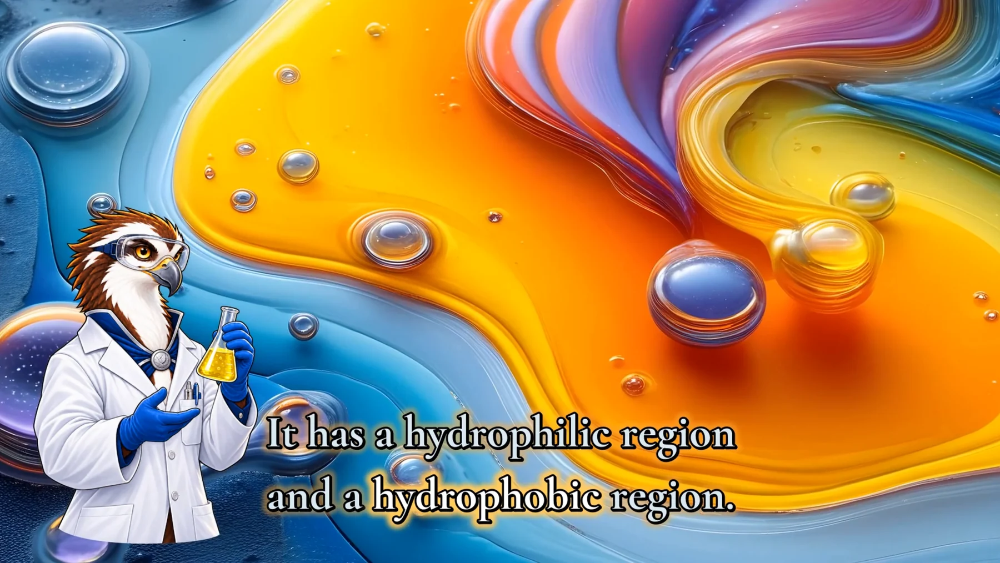
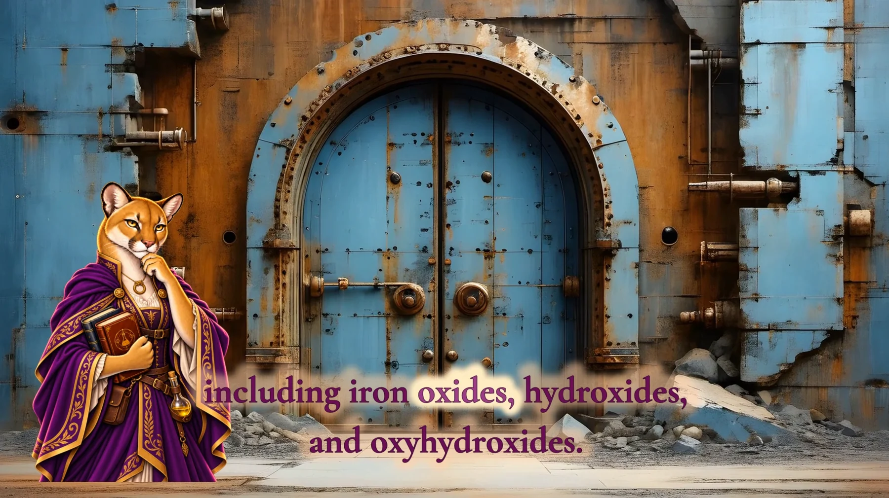

Pronunciation-aware work
Narration and caption review can account for customer-provided pronunciation notes, acronyms, names, units, and specialized terms.
For scientific, medical, educational, and technical projects where pronunciation, spelling, captions, acronyms, and specialized vocabulary matter.
This service is quote-based. A short description is enough to begin; term lists, glossaries, pronunciation notes, names, units, acronyms, and review priorities can be discussed after the initial review.
Narration and caption review can account for customer-provided pronunciation notes, acronyms, names, units, and specialized terms.
Captions can be checked against supplied term lists and glossaries so repeated terms stay consistent throughout the video.
When appropriate, technical language can receive a manual review and cleanup step before delivery.
Review needs vary by topic, length, audio quality, vocabulary density, and final format.
Specialized vocabulary needs more than automated transcription. TowleVision can treat approved script text as authoritative while speech-recognition and alignment systems assist with timing. The engineering distinction is separating what the words should be from when they occur in the audio.

In the SOAP example, approved wording includes hydrophilic and hydrophobic. Caption alignment can help place those words in time without handing the source text over to an unreviewed transcript.

The RUST example includes iron oxides, hydroxides, and oxyhydroxides. Technical spelling, caption segmentation, timing, and final readability remain review concerns rather than assumptions of perfect automatic accuracy.
You do not need a complete technical brief to begin. Share what kind of material you have and what you hope to create. Approximate length, output format, term lists, pronunciation notes, glossaries, and caption files can be discussed after the initial review.